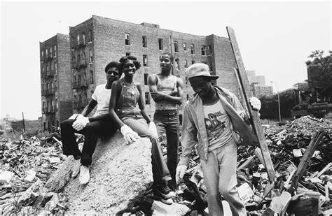
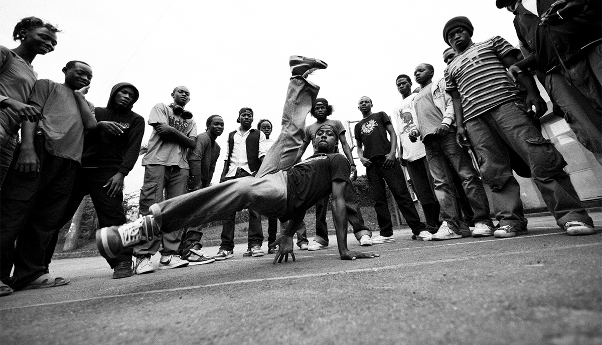

Historia
THE BRONX SOUL
Este 2023 se cumplen 50 años del nacimiento del hip hop. Una corriente cultural y artística que se originó en El Bronx, barrio de Nueva York poblado de forma predominante por afroamericanos, latinoamericanos e inmigrantes caribeños que son los responsables de la creación de una cultura que podría llamarse contracultura en sus inicios
Los años 70 vinieron marcados por el declive de la era postindustrial, la crisis económica, la falta de oportunidades y, especialmente, la persecución y opresión hacia las minorías raciales. Todos estos elementos unidos a la segregación y la creación de ghettos, favorecieron la creación de una cultura propia, de una identidad que permitiera cohesionar y generar valor en estos barrios. Nació en la calle, desde abajo, desde la pureza y la expresión propia.
 Lo más aceptado es que la palabra hip hop no provenga de ninguna anterior, sino que sea más bien una formación onomatopéyica. El uso más antiguo del término parece venir acreditado a Keith “Cowboy” Wiggins, miembro del Grandmaster Flash and the Furious Five, un grupo americano de hip hop formado en 1978. En ese mismo año un amigo de Cowboy Wiggins se había alistado en el Ejército de los Estados Unidos y Wiggins, en tono de humor, le canturreaba a ritmo de scat los típicos sonidos de marcha militar, “¡hip-hop-hip-hop!”, quedándose entonces esa cadencia y ritmo para denominar la música que hacían.